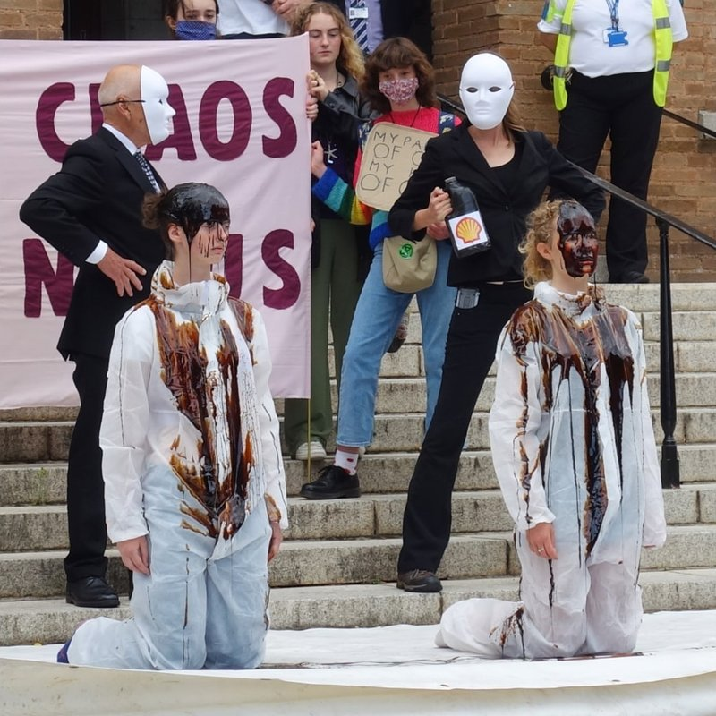
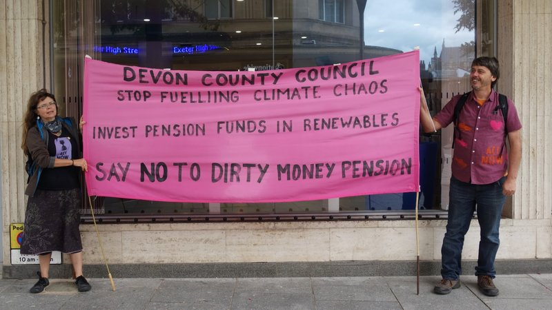

Devon Pension Fund came to prominence in February this year when it was identified as one of the UK’s largest local authority fossil fuel investors, holding significant stakes in companies such as Royal Dutch Shell, BP and ExxonMobil.
The fund has more than 39,000 members who work for over 200 public sector employers in the region. Many of these organisations, which include unitary, district, town and parish councils, education establishments and other public bodies, have declared climate emergencies, including Devon County Council which oversees the management of the fund.
Since February several protests have taken place demanding that the fund dispose of its fossil fuel company investments. In September, a protest camp pitched outside County Hall and a large demonstration led by Fridays for Future Exeter and Extinction Rebellion Exeter took place while the county council’s Investment and Pension Fund committee met inside.
It was discussing whether to move Devon Pension Fund’s passive equity allocations to a set of investment portfolios which would only incrementally reduce the fund’s fossil fuel investments, with no prospect of them being removed altogether.
Last Friday, the committee met again to consider a motion brought by Green Party councillor Jacqi Hodgson proposing much more rapid divestment than the September meeting had agreed.
Rather than restricting itself to justifying its policies and simply dismissing Councillor Hodgson’s motion, as it might have done, the county council filleted the motion, replacing most of its content and all of its intent with statements that simply reasserted the council’s existing position.
Councillor Hodgson said: “I’ve got huge concerns about the rewriting of the motion presented. It completely undermines the basis of what my motion said.”
The difficulty for the county council in adopting this dubious manoeuvre is that, as the past six months have shown, its position on fossil fuel investment has become increasingly untenable.
Councillor Jacqui Hodgson talks with protestors at County Hall. Photo © Vanessa Miles.
This is not because its contention that divestment has limited potential to influence major oil and gas companies is incorrect.
While the fossil fuel divestment movement has grown significantly in size and influence over the past ten years, has contributed to the social stigmatisation of oil and gas companies and is likely to influence some investment decisions as well as policy-making, there is little conclusive evidence that it has had a direct adverse impact on their share price to earnings ratio, the basis of their market valuations.
Divestment is also fundamentally limited as a climate change mitigation strategy because around 75% of the world’s crude oil production is controlled by companies which are either mostly or entirely owned by states including Brazil, China, Russia, Iran, Kuwait and Saudi Arabia.
The shareholder-owned companies in which Devon Pension Fund is invested are small by comparison: by market valuation Shell is just 1/25th of the size of Saudi Aramco, which has been the single greatest contributor to global carbon emissions of any company since 1965.
Nevertheless, Devon County Council’s position that Devon Pension Fund’s fossil fuel holdings confer significant potential to influence the actions of those oil and gas companies that are listed on stock exchanges is also incorrect.
It claims that shareholder control over company operations and shareholder lobbying is sufficient to transform an industry which is incapable of relinquishing its existing business model and which is happy to try to pass off development plans which depend on continued oil and gas exploration, extraction and combustion as Paris Agreement-compatible.
County Hall camp protesters. Photo © Vanessa Miles.
Devon Pension Fund investment in fossil fuel companies does not give it control over their operations partly because Devon Pension Fund does not directly own shares in these companies, but instead invests in pooled passive equity investment funds which own such shares to reduce fund management costs.
These funds are managed on Devon Pension Fund’s behalf by Legal & General Investment Management (LGIM), which directs voting on behalf of the shareholders for which it is responsible.
LGIM is Britain’s biggest fund manager, overseeing more than £1.2 trillion of assets. It is accountable to its fund unit holders, including Devon Pension Fund, in respect of such votes. But Devon Pension Fund’s holdings are relatively small, and LGIM has to consider all its investors when deciding how to vote, so Devon County Council investment policy has very little, if any, direct influence on which way LGIM votes on its behalf.
As the county treasurer said in a report to September’s Investment and Pension Fund Committee, LGIM “come to their own conclusions on voting”.
County Hall protest camp banners. Photo © Vanessa Miles.
We can see the limits of the shareholder control Devon County Council claims in practice in votes that took place at the 2021 AGMs of the three fossil fuel companies in which Devon Pension Fund has most money invested: BP, Shell and ExxonMobil.
Fossil fuel industry shareholder activist group Follow This submitted a resolution to BP’s AGM in May which challenged the company to set and publish greenhouse gas emissions targets that are consistent with the Paris Agreement, covering all scopes including its suppliers and the consumption of its energy products.
BP’s board recommended that shareholders vote against the resolution, claiming that the company’s existing strategy was Paris Agreement-compliant despite its aim to reduce the “carbon intensity” of the products it sells by just 50% by 2050.
LGIM used the shares it manages on behalf of Devon Pension Fund, among many others, to vote with the board and against the Follow This resolution.
However when Devon Pension Fund’s investment managers instead pursue progressive outcomes, other shareholders may not. Follow This submitted a similar motion to Shell’s AGM the following week, which LGIM supported because it did not believe the company’s plan could “credibly claim alignment with a 1.5°C pathway”. But it lost the vote.
County Hall protest camp banner. Photo: Leigh Curtis.
But when shareholders vote in favour of change companies may nevertheless continue as before, with their boards in the background and their CEOs in control.
At ExxonMobil’s 2021 AGM, a week after the Shell meeting, activist hedge fund Engine No.1 proposed four new board members “with the intention of getting the company to take the issue of climate change more seriously”. Three were successfully elected with LGIM’s votes in support.
However ExxonMobil’s CEO subsequently declined to make specific pledges or to stop lobbying against climate initiatives when directly asked to do so by the chair of a congressional oversight committee.
And a recent report by think tank InfluenceMap, which analysed the world’s 350 largest industrial companies and their industry associations to assess their impact on climate policy and regulations, confirmed that ExxonMobil is still the world’s most negatively influential global company on Paris-aligned climate policy.
County Hall protest camp. Photo: Leigh Curtis.
When a court in the Hague ordered Shell to cut its carbon emissions in line with the Paris Agreement earlier this year many thought that the judicial system might succeed in constraining fossil fuel companies where shareholder activism has failed.
Shell was ordered to comply with the judgement immediately, but did not do so. Its CEO subsequently issued a defiant statement in which he insisted the company had been playing a leading role in decarbonising the sector, questioned the Hague court ruling and confirmed the company would appeal against it.
He also said that the company expects to continue selling oil and gas products for “a long time to come” and said that it would not help the world “one bit” if it “stopped selling petrol and diesel today”.
He later confirmed that the company had no intention of changing its strategy despite the court ruling, which applies only in the Netherlands in any case.
Shell has since set out a plan to cut the emissions for which it is responsible by just 5% by 2030, a strategy which its CEO called “incredibly coherent”.
Youth Strike for Climate march in Bedford Square. Photo: Leigh Curtis.
Where shareholder activism and legal intervention both fail, can the shareholder “engagement” of which the county council makes much instead influence the fossil company operations?
The Local Authority Pension Fund Forum (LAPFF), of which Devon County Council is a member, undertakes such “engagement activity” on its behalf.
How did LAPFF respond to Shell’s reaction to the Hague judgement? It said it would “engage with the incoming chair”. What was the consequence of this engagement? It said the outcome of the sole meeting it had held with Shell was “dialogue”.
Nor did it make any impact on the other major fossil fuel companies in which Devon Pension Fund invests. It said it was “awaiting response” after seeking a meeting with BP, and recorded no attempt to meet with ExxonMobil at all.
As Councillor Hodgson pointed out, the county council’s filleted version of her motion included the claim that “continued engagement has a significant role to play in achieving progress and combating climate change” but failed to “recognise that engagement isn’t likely to bring about any change in the fundamental business model of fossil fuel majors, and has not done so in the past”.
Topsham Road protest march. Photo: Leigh Curtis.
In repeating this line on “engagement” Devon County Council is following government guidance that pension fund managers should resist climate change divestment campaigns and “instead engage with the companies in an effort to influence their actions”.
However it is not clear why it would trust the government’s advice in these matters. Three weeks before COP26 the government won a court challenge to its decision to grant a permit to BP to drill for 30 million barrels of oil in the North Sea after its lawyers argued that carbon emissions from burning oil extracted by BP are “not relevant” when granting such permits.
Indeed, as the county solicitor admitted in a briefing note to last week’s Investment and Pension Fund committee, “engagement” with fossil fuel companies is just as unlikely to stop them polluting as divestment.
And as the county council acknowledges, revenues are a far more significant driver of fossil fuel company operational activity than investment. The county solicitor cited Shell as an example, pointing out that the company has raised no new capital through share issues for the past four years but has received £1.219 trillion in revenues.
She also observed that reducing demand for its products is the key to depriving Shell of resources, something which Devon Pension Fund cannot influence via shareholder activism, lobbying or any other means.
County Hall protest speeches. Photo © Vanessa Miles.
More fundamental still than the limits of Devon Pension Fund’s ability to influence LGIM’s voting in its behalf, the limits of LGIM’s ability to influence fossil fuel company operations, and the limits of LAPFF’s lobbying on Devon County Council’s behalf (when it does actually get a meeting) are the limits on fossil fuel companies changing their business models in the way the county council says justifies its investment position.
At last week’s Investment and Pensions Fund Committee meeting, the assistant county treasurer said: “Engagement still has a prominent role to play in influencing companies to change their business models to support the transition to net zero.”
There is, however, broad agreement that fossil fuel companies are effectively unable to transform themselves in the ways that would be required to make their operations compatible with the Paris Agreement.
High-profile hedge fund Third Point said in October that Shell has “too many competing stakeholders pushing it in too many different directions, resulting in an incoherent, conflicting set of strategies attempting to appease multiple interests but satisfying none”.
Devon Pension Fund manager LGIM itself said in May that it had reservations about the objective of using shareholder activism to turn oil and gas firms into renewable energy companies, and that a strategy of “managed decline” would be a viable alternative option.
County Hall protest oil being poured over protestors. Photo: Leigh Curtis.
Analysis of the financial performance of energy companies by Imperial College and the International Energy Agency also concluded that the oil and gas majors would not be more profitable were they to transition to renewables, at least in the short to medium term.
This is partly because of high cost barriers which deter new entrants to the markets which they currently dominate, preventing competition, and partly because their profit margins are much higher than those in the renewable sector.
Professor Brett Christophers reinforced this conclusion, citing research by Andreas Malm which found that hydrocarbon production remains significantly more profitable for operating companies than renewable energy generation, with internal rates of return on the former around 15-20% and the latter around 5-6%.
He said profit is the reason that BP plans to start seven new hydrocarbon production projects next year, and will continue to be the reason energy companies concentrate their activity in fossil fuels, not renewables, for the foreseeable future.
Meanwhile the enormous profits fossil fuel companies continue to make (BP 2021 Q3 profits were $3.3 billion and Shell $4.13 billion) are not being directed towards extra investment in renewables as per the county council’s jsutification for its investment position. BP began promoting investor share buybacks last month at an ongoing rate of a $1 billion each quarter.
 County Hall protest oil poured over protestors. Photo: Leigh Curtis.
At the same time fossil fuel company emissions reduction plans will not produce the outcomes they claim, or those the world needs.
Professor Gail Whiteman and Professor Johan Rockström assessed Shell’s corporate “energy transition strategy” just before its AGM this year.
They said: “Rather than reducing its emissions, Shell plans to offset gigatonnes of emissions by planting trees to capture carbon. It says that reforestation and other nature-based technology will be enough to allow its expanding operations. But Shell’s Sky scenario requires a forest the size of Brazil to offset the volume of carbon it intends to continue pumping out.”
“Shell sees oil and gas playing a role in our global economy for many decades to come. Science says that is simply not feasible if we want to avoid catastrophic climate breakdown.”
Engine No.1’s analysis of ExxonMobil found that it not only excludes around 90% of its emissions from emissions reductions targets which it claims are “consistent” with the Paris Agreement, but has set targets for emissions reduction that are actually higher than its historic emissions levels.
And oil industry executives were restricted to side meetings at COP26 because their plans are not science-based: the measurement methodologies they propose and on which their emissions reduction plans depend don’t yet exist.
County Hall protest action. Photo: Leigh Curtis.
It is no surprise, then, that many organisations have decided to fully divest from fossil fuel companies while there are others who will still pay them for their shares.
The largest public pension fund in Washington D.C. purged its $6.4 billion fund of all direct holdings in fossil fuels five years ago.
The University of Exeter decided to fully divest its endowment fund two years ago and Harvard University said it will no longer invest its $42 billion endowment fund in fossil fuels earlier this year.
And a few weeks ago ABP, Europe’s largest pension fund, announced that it will have sold its entire €15 billion investment in fossil fuel companies by the spring of 2023. Its chairman said it had been unable to use its position as a shareholder to persuade the companies in which it had invested to transition sufficiently quickly towards decarbonisation.
DivestInvest, an organisation which has tallied such commitments since 2014, says that nearly $40 trillion of divestment commitments have now been made by more than 1500 institutions.
Even the International Energy Agency, which was established to ensure the energy supplies of rich, industrialised countries in the wake of the 1973 oil crisis, has now concluded that all investment in new coal, oil and gas production must cease immediately and all exploration and development of new oil and gas fields must halt this year to give the world an even chance of limiting the global temperature rise to 1.5°C.
County Hall protest action. Photo: Leigh Curtis.
Devon County Council nevertheless remains confident that its pension fund investment position is not only correct, but leads the way for others to follow.
Councillor James Morrish, Investment and Pensions Fund Committee chair, described its September decision to move the fund’s passive equity allocations as a “landmark decision” despite the change only incrementally reducing the fund’s fossil fuel investments, with no prospect of them being removed altogether.
But confidence does not explain why it chose to conflate investment in fossil fuel production with the much broader issue of the whole pension fund’s carbon footprint at last week’s committee meeting, despite this not being the focus of Councillor Hodgson’s motion.
The assistant county treasurer said: “To achieve the goal of addressing climate change we need the global economy to move, and if we are to achieve net zero as a fund that means that, in effect, the companies we invest in all need to achieve net zero.
“That’s not just about disinvesting in fossil fuel suppliers, its about everybody reducing their emissions. We need that pool of companies that are net zero if we are going to have net zero portfolios. At the moment we are relying on the companies to actually take action if we are to achieve that. We cannot control that.”
Aside from the acknowledgement that Devon County Council cannot control the decarbonisation strategies of companies in which it invests, echoed from the county solicitor’s briefing note, this statement fails to discriminate between companies which are not engaged in fossil fuel production but whose operations nevertheless still produce some greenhouse gases, and companies whose business models are the discovery, extraction, production and sale of fossil fuels for combustion.
Similarly, Councillor James O’Dwyer said: “Full disinvestment, I believe, leaves us with a reduced amount of businesses we could invest with and would present an increased risk to the whole fund”. Is there so little choice of global investment options that divestment from fossil fuel companies would put Devon Pension Fund more at risk than its continuing investment in those companies already does?
 Protestors hold banner in Bedford Square. Photo: Leigh Curtis.
Devon Pension Fund’s members depend on Devon County Council’s Investment and Pensions Fund Committee to take responsibility for their interests. The committee members have a legal duty, as Councillor Hodgson’s motion pointed out, to treat the fund’s members “fairly as between them”. This means, among other things, seriously considering the long-term interests of younger members, who are more likely to be significantly affected by climate change than older members.
And there is no legal barrier to a pension fund selling off its fossil fuel investments. According to trade body the Pensions and Lifetime Savings Association, which represents 1,300 pension funds, the fidicuiary duty of trustees to ensure the best returns for pension fund members is consistent with divestment on financial grounds.
These include the increasing risk of oil and gas company assets being rendered worthless as investors exit the sector, something former Bank of England governer Mark Carney has repeatedly warned about.
Most committee members also seem oblivious to the wishes of those Devon Pension Fund members who want the fund to divest simply so their pensions do not depend on active participation in fossil fuel exploration, extraction, production and combustion.
Councillor Hodgson quoted one pension fund member, who said: “I’ve worked for South Hams District Council for over twenty years in practical conservation and engaging communities with their environment. I cannot base the comfort of my retirement on the destruction of the global environment and the futures of generations to come, and of our own two children.”
Councillor Henry Gent echoed her point, saying some pension fund members “simply didn’t want to own shares in fossil fuel companies”.
As the 130 MPs who called for the Parliamentary Contributory Pension Fund to divest from fossil fuels last month put it, they want to “ensure that [their] pensions are not funding climate disaster”.
Councillor Hodgson’s original motion proposed a poll of Devon Pension Fund members to seek their views on fossil fuel divestment, but the county council expunged the proposal, along with everything else in the motion which would entail a change in its position.
While Devon County Council continues to insist that fossil fuel investment will clean up the hydrocarbon sector, it seems the only option for fund members who don’t want their pension to depend on dirty money is to divest from the pension fund itself, a worst case scenario for individual members which the committee nevertheless appears to embrace.
Unfortunately those who are already drawing their pensions are prohibited from doing so.